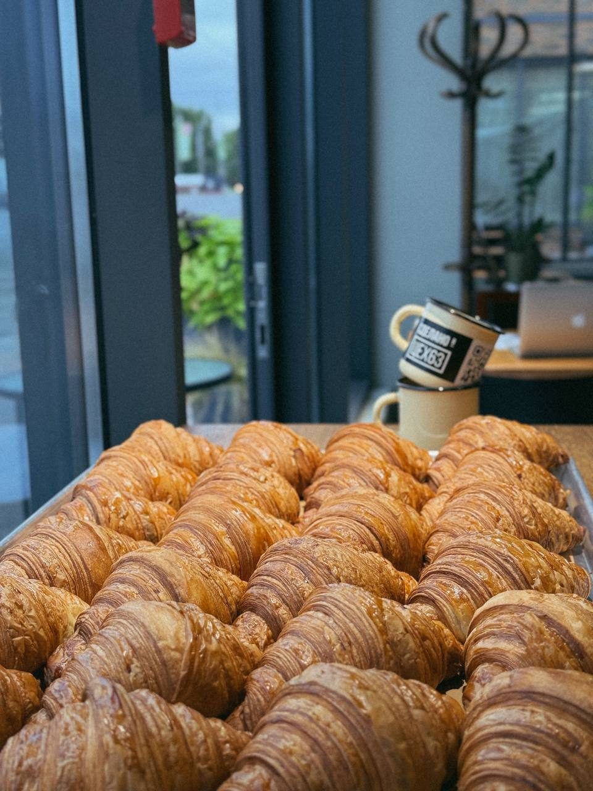
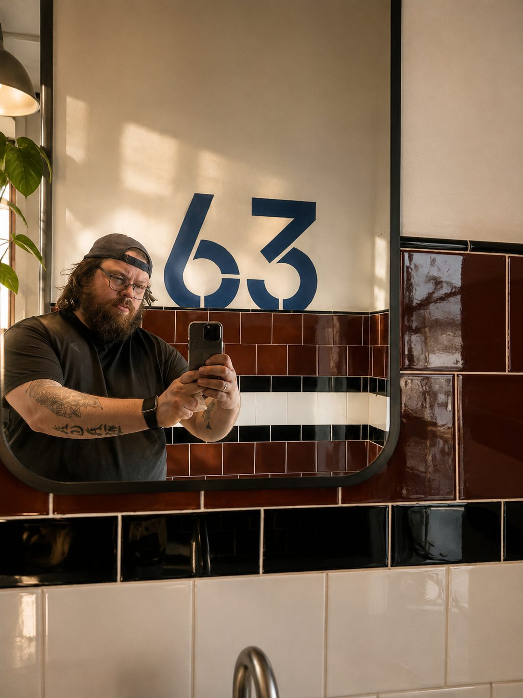
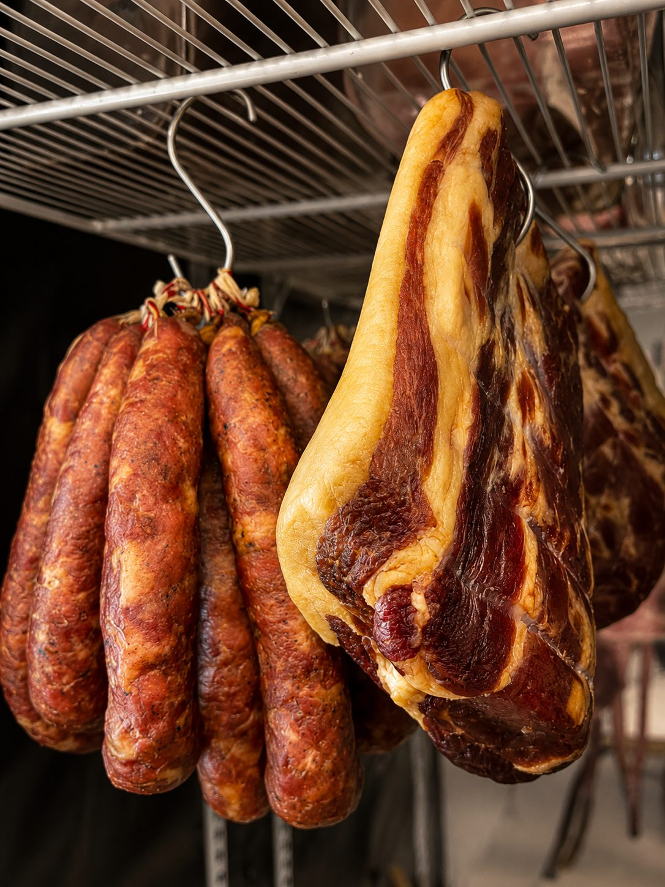

Пекарня
ночьюКруассаны, бриошь, питы. Тесто слоят вручную, противни уходят в печь до рассвета.
Главная · Цех
Когда засыпает город, просыпается пекарь. Это не красивая фраза для вывески — это расписание. Тесто ставят ночью, коптильня работает с утра, и только потом открывается зал.

Шеф-повар
Собрал команду, встал к печи и с тех пор от неё не отходит. Каждое утро выносит противень с круассанами, снимает это на телефон и выкладывает в канал — так у кафе появился голос, в котором нет ни слова маркетинга.
Кафе носит имя его сына. Отчество мальчика стало вывеской — и получилось название, которое звучит как старая лавка на углу, где всех знают в лицо.
Это не просто общепит в обычном понимании. Это прежде всего команда энтузиастов-ремесленников, одержимых своей идеей. Мы делаем то, что умеем лучше всего: дарим радость от простой и понятной еды.
Как это было
Начали с самого трудозатратного. Пекли ночью и на рассвете развозили горячими по кофейням города. На вопрос «сколько слоёв в круассане» устроили конкурс — правильный ответ тридцать два.
Несколько месяцев растили закваску — ради бородинского, самого долгого хлеба в производстве. Тогда же появились сосиски из мяса без добавок и лосось своего посола.
Витрина переехала на Юбилейную, а рядом с ней встали столы. Появились завтраки, пицца из каменной печи, сет мясника и летняя веранда.
Прежнее название пришлось оставить — так решилось не нами. Мы восприняли это как повод: сделали уклон в семейное кафе и расширили лавку продуктами местных фермеров. Так появился Фёдор Никитич.
Рейтинг 5,0 и награда Яндекс Карт «Хорошее место». Как написал шеф: это, конечно, не звезда Michelin, но тоже приятно.
Что происходит за стеной

Круассаны, бриошь, питы. Тесто слоят вручную, противни уходят в печь до рассвета.

Деревенский, бородинский, тартин, багет на опаре. Без прессованных дрожжей.
Окорок, пастрами, брискет, утка, краковская. Смокер, соль, время — и больше ничего.

Крем-брюле, эклеры, медовик, торты на заказ. Отдельный шеф-кондитер.
Очаровательное кафе с лучшими круассанами и крафтовой бакалеей. Дружелюбная атмосфера и приятный дизайн с фото-отсылками к истории города.
Это самое лучшее атмосферное место в городе, рёбра просто пушка. Ценник полностью соответствует кухне.
Отличная кухня, вежливый персонал, шеф — классный мужик. Обстановочка, как сейчас говорят, вайбовая.
Витрину видно от двери, а пекарню — если попросить.